|
|
|
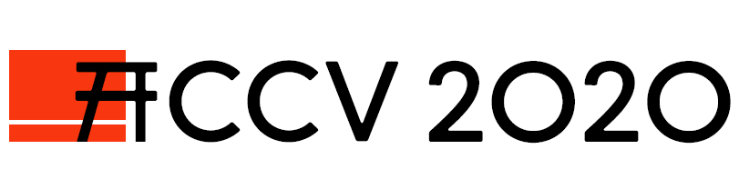
ACCV 2020 (Oral) |
|
| [Paper] | [Bibtex] | [Short Talk] | [Long Talk] | [Github] |
Overview Video
Abstract
In this paper, we present Goal-GAN, an interpretable and end-to-end trainable model for human trajectory prediction. Inspired by human navigation, we model the task of trajectory prediction as an intuitive two-stage process: (i) goal estimation, which predicts the most likely target positions of the agent, followed by a (ii) routing module, which estimates a set of plausible trajectories that route towards the estimated goal. We leverage information about the past trajectory and visual context of the scene to estimate a multi-modal probability distribution over the possible goal positions, which is used to sample a potential goal during the inference. The routing is governed by a recurrent neural network that reacts to physical constraints in the nearby surroundings and generates feasible paths that route towards the sampled goal. Our extensive experimental evaluation shows that our method establishes a new state-of-the-art on several benchmarks while generating a realistic and diverse set of trajectories that conform to physical constraints.
Key Ideas
The key idea of our paper is to interpret the task of trajectory prediction as a two-stage process.
| 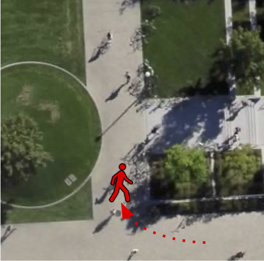 |

|
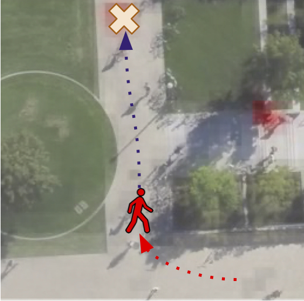 |
Original Scene:
|
Stage 1: Intermediate Goal Prediction.
|
Stage 2: Routing.
|
The two-stage prediction process allows us to compose the task of pedestrian trajectory prediction into two stages: Stage 1: The selects a intermediate goal position that the pedestrian wants to reach n the the scene. Stage 2: The decoder of the model is conditioned on the sampled goal position and the pedestrian routes towards that goal.
| 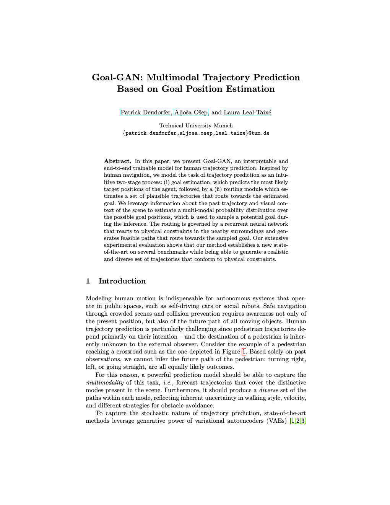 |
Goal-GAN: Multimodal Trajectory Prediction Based on Goal Position Estimation ACCV 2020 (Oral) [Paper] [Bibtex] [Github] |
Goal Module
| 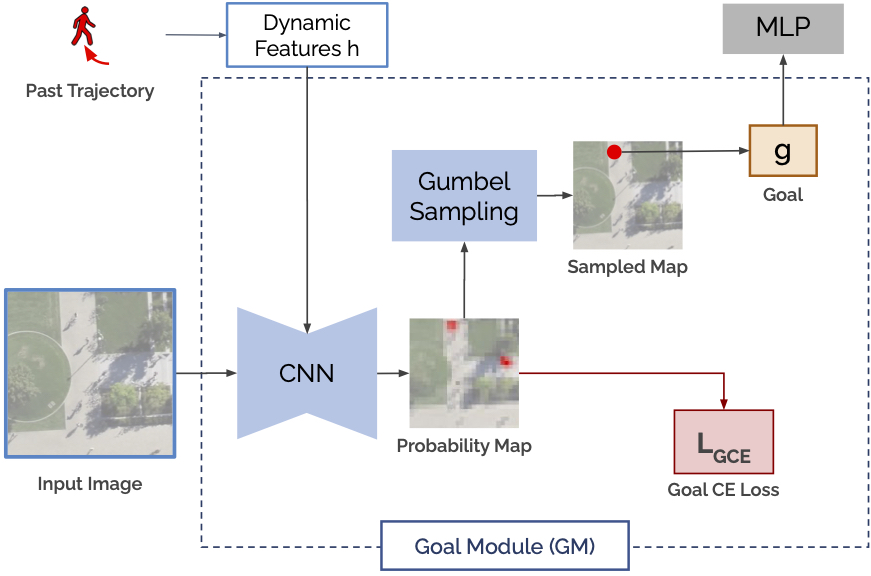 |
The key idea of our work is the Goal Module. The Goal Module estimates a discrete probability distribution over the possible intermediate goal positions in the scene. To do so, the network combines the visual features of the scene with the encoded motion of the pedestrian and outputs a probability map. We sample discrete goal positions from the estimated probability distribution that are passed to the decoder. We use the Gumbel Softmax Trick to backpropagating the gradients of the final loss through the stochastic process. |
Model Overview

Our proposed Goal-GAN consists of three key components, as shown in Figure 2.
-
Motion Encoder (ME):
extracts the pedestrians’ dynamic features recur-sively with a long short-term memory (LSTM) unit capturing the speed anddirection of motion of the past trajectory. Goal Module (GM):
combines visual scene information and dynamic pedestrian features to predict the goal position for a given pedestrian. This module estimates the probability distribution over possible goal (target) positions, which is in turn used to sample goal positions.Routing Module (RM):
generates the trajectory to the goal position sampled from the GM. While the goal position of the prediction is determined by the GM, the RM generates feasible paths to the predetermined goal and reacts to obstacles along the way by using visual attention.

|

|

|
Experiment on Real Datasets
We evaluate our model on the publicly available datasets ETH, UCY, and Stanford Drone Dataset
and achieve state-of-the-art results compared with the baselines.
Visualizations: We show the probability map for different trajectories in the test set. Hover over the images
to see the final trajectory predictions of the model.
To see the visual results, hover over the images.
ETH and UCY Dataset
| 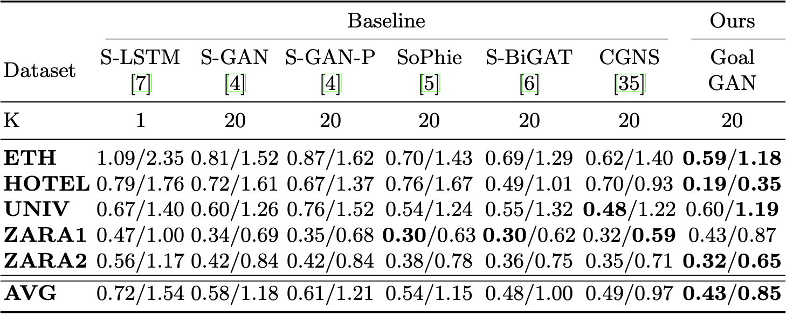 | 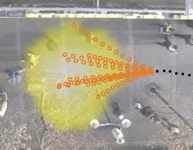 | 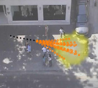 | |
Stanford Drone Dataset
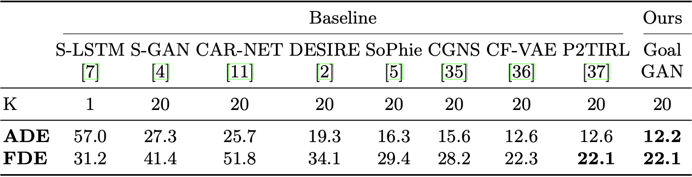| 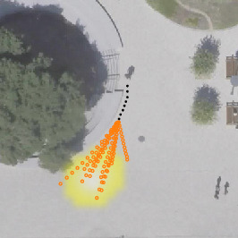 | 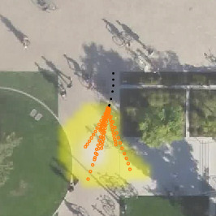 | 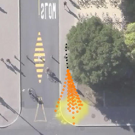 |
Code
Acknowledgements |